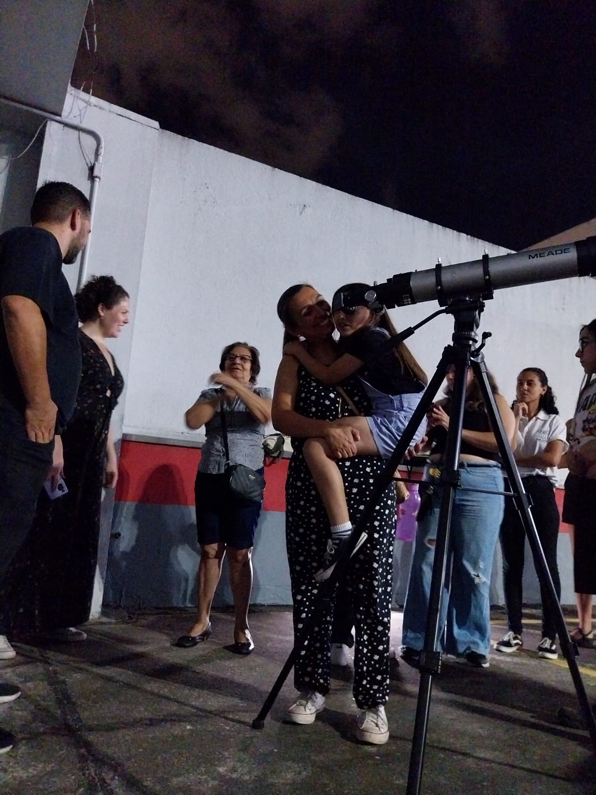
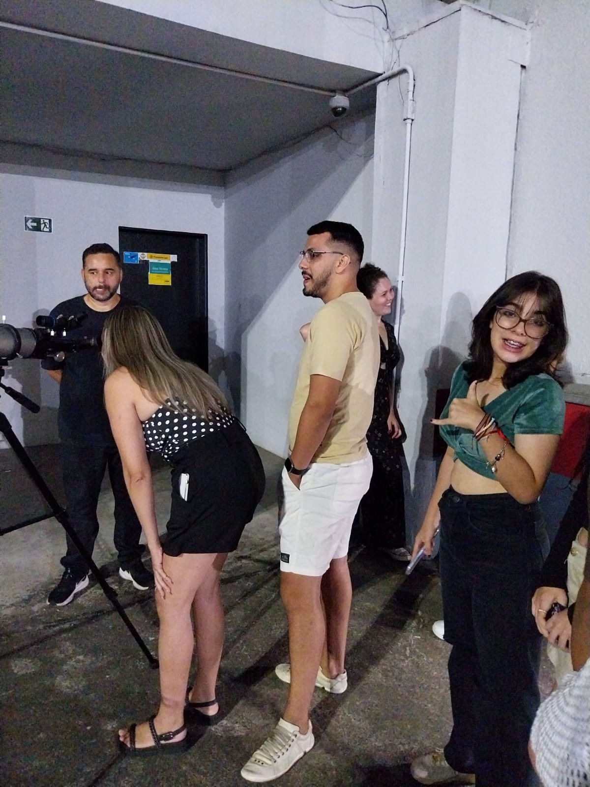
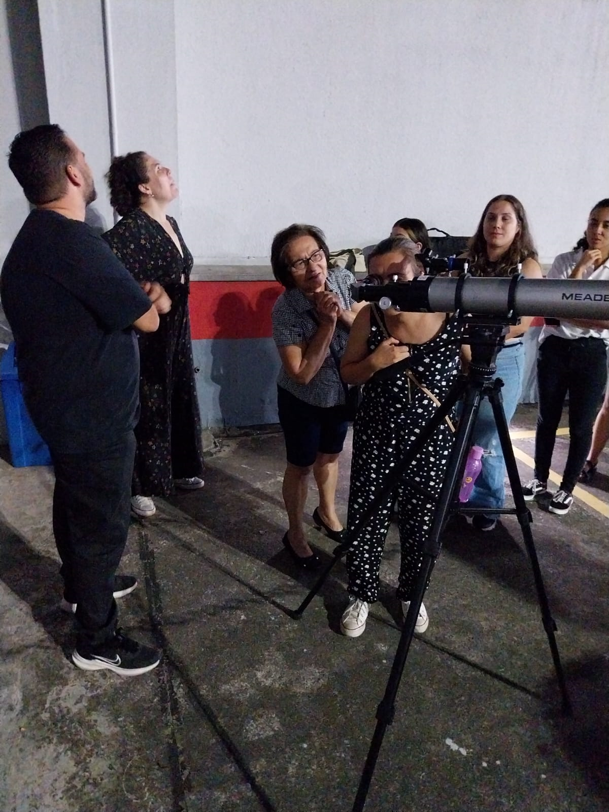
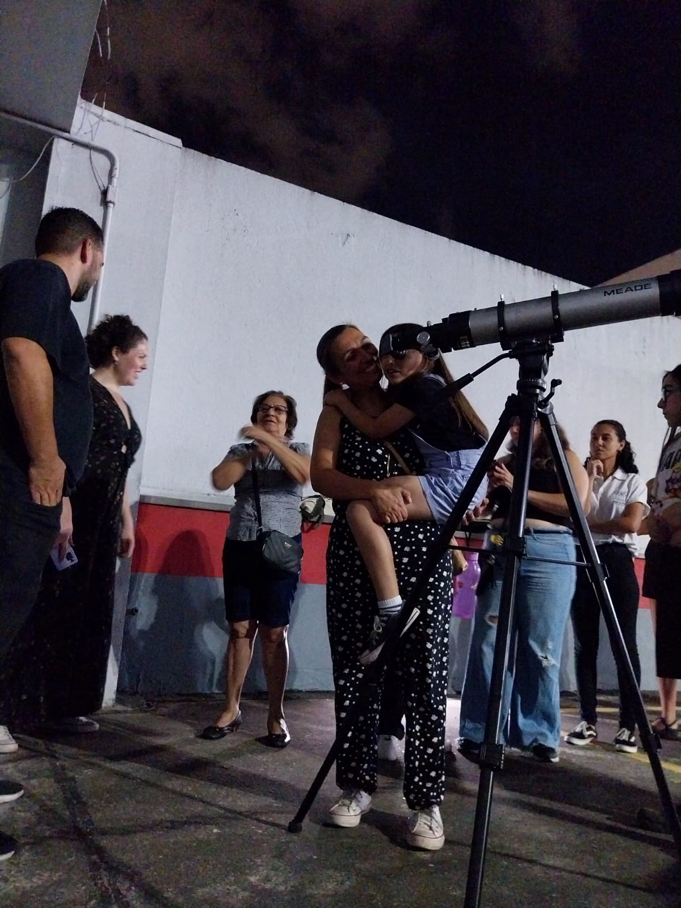
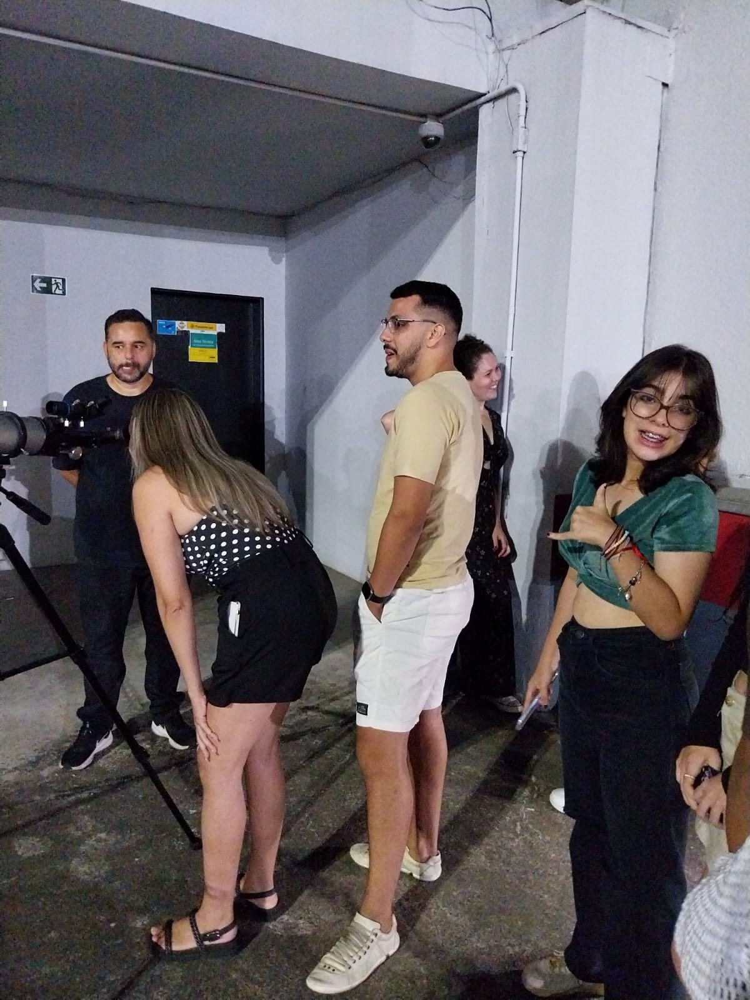
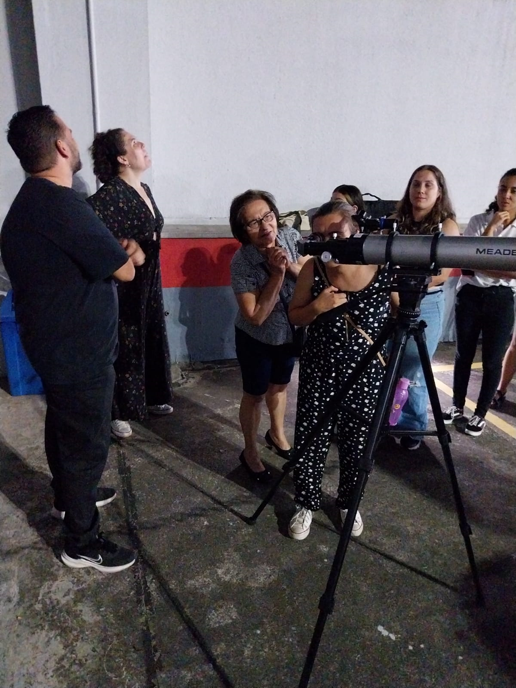

Qual nosso objetivo com essa campanha?
Abrace essa causa e tenha um pedacinho do céu sempre com você!


Como coordenador do Planetário de São Bernar do Campo, pude perceber o quão importante é o conhecimento cientifico transmitido de forma didática a uma criança, porém, nem todas tem acesso a este tipo de tecnologia. Assim tomamos a iniciativa de colocar este projeto em prática, sabemos que o cidadão não pode viver esperando pelo poder público para que sua cidade tenha melhorias significativas na área educacional e desenvolvimento científico, entendemos que estas responsabilidades também podem partir dos cidadãos, empresários e instituições educacionais colaborando com seus conhecimentos, espaços ou custeando equipamentos fundamentais para o bom desenvolvimento do projeto junto às escolas do município.
Planetário móvel: Uma viagem ao sistema solar através de uma simulação onde todos poderão conhecer os segredos do movimento aparente do sol e das estrelas, viajar até aos planetas do nosso sistema solar e saber que fazemos parte de um ecossistema equilibrado e somos responsáveis pela sua manutenção e sobrevivência.
Ual! Nossa! Que legal! ...São algumas das expressões que se ouvem em vários momentos das sessões de Planetário:
Quando começa o anoitecer e surgem inúmeras estrelas; quando são projetadas as constelações; quando comparamos os tamanhos da Terra e do Sol; ou ainda quando comparamos o Sol com a estrela Antares.
Após as sessões, as perguntas que são feitas pelos estudantes e o brilho nos olhos das crianças dão a certeza de que o Planetário cumpriu seu principal papel: ensinar, divulgar e maravilhar. Em “O mundo assombrado pelos demônios: A ciência vista como uma vela no escuro“, ao relatar sua experiência de divulgação da ciência para estudantes das séries iniciais da educação básica,
Carl Sagan afirma: As crianças inteligentes e curiosas são um recurso nacional e mundial. Precisam receber cuidados, ser tratadas com carinho e estimuladas. Mas o mero estímulo não é suficiente. Temos de lhes dar também as ferramentas essenciais com que pensar (Sagan, 1996: 313).
Eis o nosso desafio: dar aos estudantes as ferramentas essenciais com que pensar, considerando principalmente o contexto histórico e social em que vivemos. Apesar das rápidas mudanças que caracterizam a sociedade atual, nosso modelo de educação permanece arraigado a conceitos como verdade absoluta, certeza, transmissão do conhecimento e outros. Em Aprendizagem Significativa Crítica, Moreira (2005: 5) resume:
Nossa educação fundamental acaba com a capacidade natural que as crianças têm de perguntar e as transformam em memorizadoras de respostas corretas para coisas que elas não perguntam.
Espaços de educação não formal como Planetários, observatórios, museus e centros de ciências aliados em potencial para a construção e adequada dessas ferramentas essenciais que permitirão ao aluno aprender a aprender e ao cidadão ampliar seu horizonte de conhecimento. A visitação a esses espaços precisa, contudo, ser planejada e realizada de forma a favorecer a aprendizagem significativa, além de despertar o interesse e a admiração dos estudantes e do público como um todo para as ciências.
Ficou curioso? Aqui vão algumas dicas para que você e seu filho aproveitem ao máximo uma visita ao planetário:
1. Crie expectativa na criança.
Ter curiosidade sobre o que se vai ver ajuda muito a prender a atenção da criança e é uma ferramenta importantíssima para o aprendizado. Pensar sobre o que se espera, se o céu no espaço é muito diferente do que vemos daqui, o que são constelações e porque a relação do homem com os astros é importante pode tornar a compreensão mais fácil e fazer surgir outras perguntas.
2. Ajude seu filho prestar atenção ao céu noturno.
Pergunte a ele sobre o que verá. Consegue identificar alguma estrela ou planeta? O que imagina que existe lá? Será que o céu natural é muito diferente do que se vera num planetário? Fazer um exercício de criatividade também pode ser bastante divertido. Se fosse um astrônomo, que nome daria ás estrelas que consegue ver? Comparar este exercício de criatividade e imaginação com aquilo que será visto pode ajudar a criança a reter as informações mais facilmente.
3. Encontre a sessão que mais se adequa ao seu filho.
Planetários normalmente têm sessões variadas e cada uma delas pode tratar de um tema específico. Pode haver muita diferença de foco e linguagem utilizada em cada apresentação, e é interessante checar o programa e procurar saber a que público cada sessão se destina. Quanto mais seu filho compreender o que é dito, mais poderá aproveitar a informação que está recebendo.
4. Encoraje seu filho a fazer perguntas após a sessão.
E não tenha vergonha de colocar suas próprias dúvidas ou comentários também. Se desejar saber mais sobre algo que chamou sua atenção, sacie sua curiosidade. Pode ser uma ótima oportunidade para você e seu filho aprenderem mais sobre vários temas relacionados á Física, Matemática, Geografia e muitas outras áreas do conhecimento.
5. Estimule seu filho a conversar sobre o que viu.
O que mais chamou a atenção da criança? Qual foi sua sensação ao ver a projeção? De que planeta ou estrela gostou mais? De quantos astros consegue recordar o nome? Fazer perguntas e deixar a criança á vontade para falar é uma boa forma de fixar o conhecimento e um estímulo para participar de outras atividades relacionadas ao tema.
6. Dedique tempo para levar seu filho ás exibições e outras atividades normalmente oferecidas pelos Planetários.
É uma boa maneira de se familiarizar com o tema e contextualizar o que será ou o que foi visto na sessão. E é um tempo em que você e seu filho terão para fazer conexões com outras disciplinas, elaborar mais perguntas e dar mais sentido aquilo que a criança está aprendendo na escola - mas de uma forma muito mais lúdica e pessoal.
Que tal uma
oficina de astronomia na sua escola, clube ou
empresa?

As oficinas poderão ser realizadas no Shopping e em escolas municipais e estaduais do município.
Milton Barros foi Diretor do Observatório Astronômico de Diadema, Coordenador Geral da Sociedade de Astronomia e Astrofísica de Diadema, Coordenador de Projetos da Sociedade de Astronomia e Astrofísica de Diadema, especialista em Gnomônica, Coordenador do Planetário de São Bernardo do Campo, Professor e autor do Projeto Relógio Solar nas Escolas.
"Creio que está na hora das escolas brasileiras abandonarem o tradicional ensino baseado em quadro negro e giz e partirem para experimentos empíricos é práticos para que nossos alunos comessem a deduzir e pensar por conta própria. Para que isso aconteça e preciso ousar um pouco mais ao ensinar. Nas escolas há, cada vez mais, felizmente, projetos mobilizadores das capacidades dos alunos, graças ao trabalho de professores competentes e responsáveis. Sei que será assim em todas as escolas, porque Escolas que não inovam em sua forma de educar, não tem lugar nos tempos que correm."
PLANETÁRIO
SHOPPING PRAÇA DA MOÇA.


PLANETÁRIO NA UNIFESP - CAMPUS DIADEMA. CERIMÔNIA DE ENTREGA DE MEDALHAS DA OBA.

PLANETÁRIO NA ESCOLA PEI ANTONIETA BORGES ALVES - DIADEMA-SP

PLANETÁRIO NA SECRETARIA MUNICIPAL DE EDUCAÇÃO DE DIADEMA


PLANETÁRIO NO SESC - BIRIGUI - SP


TUDO SOBRE A OLIMPÍADA BRASILEIRA DE ASTRONOMIA
CLIC AQUI!

Prof.: Milton Pereira
Cel.-  (11) -
96918-9190
(11) -
96918-9190
Sobre o professor Milton Pereira:
https://www.astronomianaescola.elementfx.com/trabalhos.html
 contrate o planetário móvel para uma sessão em sua escola, clube ou empresa!
contrate o planetário móvel para uma sessão em sua escola, clube ou empresa!


 
